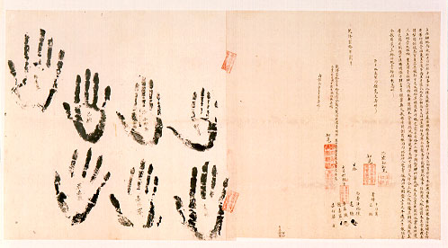

義助慰安婦
—— 李敖百件珍藏義賣藝術品（第71件）
品 名： H1. 台灣古地契 930 件（契中每一單片以一件計） 預估價： 1000 萬 成交價： （保留） 說 明： 李敖在三、四十年前就開始蒐集台灣本土文化的歷史資料，經妥善之處理而保存至今。現印有七個高山族掌印的地契乃清乾隆年間（近 250 年前）文件。 漢人早年來到台灣，對土地很有興趣，因此與高山族訂契約騙土地；而高山族不會簽名、亦無圖章，故以蓋手印、掌印表示。此文件為台灣史上保存最好、最珍貴的文件。1995.4.25 聯合晚報曾刊載：「雜貨店閣樓發現大批乾隆年間字契」，1995.4.26 聯合報亦登有此消息，引人注目，但契約上僅有二個掌印，未如李敖手上七個之多。
台灣史的史料很單薄，一為地契，一為家譜，其他以外的文字資料相當少。而從契約文字上，可看出當時人相當純樸、有趣。李敖蒐集這些契約史料有 930 件之多，其中包括乾隆、道光、咸豐、同治、光緒、日本統治時代，內含板橋林家土地的資料，歷史研究價值極高。
